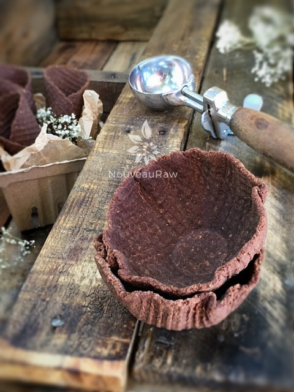

Chocolate Waffle Cones and Bowls
~ raw, vegan, gluten-free, grain-free ~
I would like to share a story that starts back in 1904. Might as well grab a cold drink and snack for this one. Oh, OK, don’t worry… I am going to skip over everything that took place between 1905 – 2013. I will save that for a rainy day.
In 1904 during the World’s Fair, held in St. Louis, Missouri, the birth of the waffle cone took place. When ice cream vendor Arnold Fornachou ran out of paper dishes, Ernest Hamwi, a Syrian immigrant, rolled up some of his zalabia, a waffle-like pastry, and gave it to Fornachou to use. This new way to eat ice cream quickly became popular throughout the entire fair.
But who says that the waffle cone has to be just for ice cream? It can be used for many other treats. For the filling, you can use Young Thai Coconut Yogurt and sprinkle fresh fruits, nuts, or granolas over the top. Use any cheesecake batter for a frozen dessert!
If you want to stick to traditional ice cream cones, there are many raw ice cream recipes that you can choose from as well. Those are just a few ideas; I am sure your mind is already racing with thoughts… mine is!
When I made these, I used a waffle cone machine (unplugged of course). You can usually find them at your local department stores. Or even check the thrift shops… no need to worry if it works or not! You don’t have to use this machine at all if you don’t want to invest in one. You can do all the steps as I instructed below but instead of doing it on the machine, do it on the countertop, it just won’t have the waffle texture.
The main ingredient in this recipe is almond pulp, which is the by-product of making almond milk. If you are new to this idea, I provided a link below on how to make your own nut milks. I haven’t tested it, but you can most likely use almond flour in place of the pulp, but it will change the texture and perhaps the flavor just a tad. If you are up for experimenting… please go for it and let me know how it turns out. We all learn from one another. I will be making various desserts with these, and when I do, I will create separate posts for them. Enjoy and let your imagination run wild!
yields 28 cones (1/4 cup batter each)
- 1 1/2 cups (220 g) cashews, soaked 2+ hours
- 2 (263 g) ripe bananas
- 1/2 cup (116 g) raw coconut butter
- 1/2 cup (160 g) maple syrup
- 1/2-1 tsp 2-4 g) liquid stevia
- 1 cup (172 g) flaxseed, ground
- 1 cup (80 g) raw cacao powder
- 1 1/2 tsp (5 g) ground Ceylon cinnamon
- 1/2 tsp (4 g) Himalayan pink salt
- 6 cups (1.196 kg) packed, moist almond pulp
Preparation:
- After soaking the cashews, drain and rinse them.
- In a blender combine the cashews, bananas, coconut butter, maple syrup, and stevia. Process until creamy. Set aside.
- In the food processor, fitted with the “S” blade, combine the ground flax, cacao powder, cinnamon, and salt.
- Now add the cashew mixture and almond pulp to the dry ingredients. Processing until creamy and smooth.
- You will need a 12 cup food processor or do it in batches.
- You can mix all this together by hand in a large bowl, just plan on using your hands, so everything gets well mixed.
Shaping cones:
- To make cones I used Cream Horn Molds for molds.
- Measure out 1/4 cup of batter and roll into large balls. Do this until all of the batter is gone.

To make the cones without a waffle cone form:
- Line the cutting board with a piece of plastic wrap, place the ball in the center, and lay another piece of plastic wrap over the top.
- Press flat with your palm. Then use a rolling pin to roll out a circle that is approximately 6″ in diameter.
- Lightly coat the molds with coconut oil. Lay the mold on the edge of the circle and roll the mold, wrapping the batter around it as you go. See the photo below.
- Gently pinch the tip of the cone, closing it, so that ice cream doesn’t leak out when eating it.
- Lay the cone on the mesh sheet that comes with the dehydrator. I left the mold inside the cone for part of the drying process.
- To make the cone with the waffle maker:
- Line the waffle cone machine with plastic wrap, place the ball of batter in the center, and lay another piece of plastic wrap over the top.
- Close the machine and squeeze shut.
- Open, peel off the top piece of plastic wrap, and remove the flattened waffle cone.
- To make the waffle bowls. I used these small bowls for molds.
- Line the cutting board with a piece of plastic wrap, place the ball of batter in the center, and lay another piece of plastic wrap over the top.
- Press flat with your palm. Then use a rolling pin to roll out a circle that is approximately 6″ in diameter.
- Lightly coat the bowl/mold with coconut oil. Lay the mold on the cutting board, upside down. Lay the chocolate disc over the mold and gently press the batter down around the edges so that it is flat against the mold.
- Lay the mold on the mesh sheet that comes with the dehydrator. I left the mold inside the waffle bowl for part of the drying process.
- To make ice cream waffle sandwich cookies:
- You can use the same technique as above to flatten the balls; either use the waffle machine to get the pattern or just roll them flat with a rolling pin.
- Use a circular cookie cutter to make the ice cream sandwich shapes.
- Place the trays in the dehydrator and dry at 145 degrees (F) for 1 hour, reduce the heat to 115 (F) and dry for about 10 hours. Once dry enough and they hold their shape, remove the molds. Continue drying for another 10 hours or until dry.
Culinary Explanations:
- Why do I start the dehydrator at 145 degrees (F)? Click (here) to learn the reason behind this.
- When working with fresh ingredients, it is important to taste test as you build a recipe. Learn why (here).
- Don’t own a dehydrator? Learn how to use your oven (here). I do however truly believe that it is a worthwhile investment. Click (here) to learn what I use.
© AmieSue.com